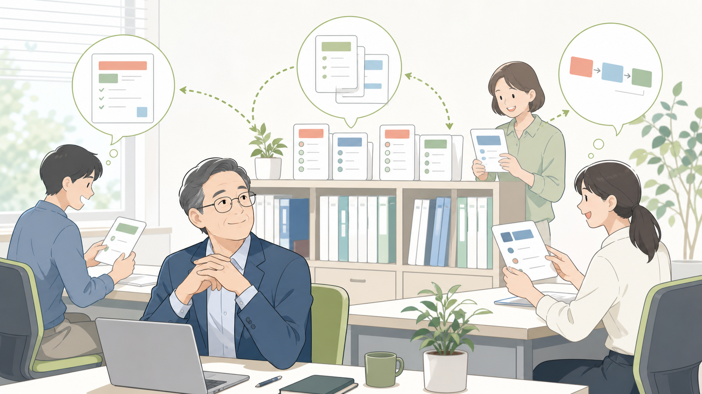

他社の改善事例 / 店舗・多拠点・サービス業
レジ横の質問を店長に飛ばさず、AIマニュアルでその場の確認に変える
紙マニュアル、過去チャット、店長の回答をAIマニュアルにまとめ、スタッフが接客中でも返品条件、予約変更、クーポン併用をまず確認できる状態にします。返金やクレームなど責任が残る判断だけ店長へ戻します。

先に結論
店長の経験は残したまま、同じ質問をスタッフが先に確認できる形にします。
店舗では、昼時や閉店前ほど質問が店長へ集まります。開封済み商品の返品、クーポン併用、予約時間の変更など、条件を見れば進められる確認までレジ横から呼び出されていました。
改善後は、紙マニュアル、PDF、チャットの過去回答をAIが参照できる形にし、スタッフが状況を入力すると通常手順、確認条件、店長へ上げる基準が返るようにします。返金可否、規約外対応、クレーム化しそうな場面は店長が確認します。
仕事の変化
何をAIに確認させ、どこから店長が見るかを分けます。
現場で起きていたこと
レジ前に列ができる時間帯は、冊子を開いて返品条件を探す余裕がありませんでした。呼び出しが重なるほど、店長は売場、バックヤード、電話対応を行き来しながら、同じ確認で何度も手を止められていました。
変えたこと
AIに任せるのは、マニュアル検索、該当手順の提示、過去回答の要約、スタッフ向けの説明文作成までです。画面には「通常対応」「確認する項目」「店長確認」の順で出し、返金可否、値引き、クレーム対応、個人情報や規約外対応は店長が確認します。
改善後に残るもの
新人ごとの差が減り、店長はその場で叱るより、あとで対応の理由を教えやすくなります。戻った時間は、売場確認、常連対応、新人への声かけ、クレームになりそうな案件の早めの確認に使えます。
改善後の実感
接客中の質問を、店長待ちからその場の一次確認へ変えます。
質問が全部店長へ
忙しい時間ほど、返品、予約、接客判断の質問が店長に集中していました。
まずスタッフが確認する
スタッフはタブレットやスマホで返品条件や予約変更手順を確認し、規約外、返金判断、強い不満があるお客様だけ店長へつなぎます。
教育が安定する
新人ごとの差が減り、店長は叱るより教える時間を作りやすくなります。
混雑中の店頭判断
返品条件を確認したい新人スタッフが、店長の手を止めてしまう。
店内は昼過ぎの混雑で、レジ前には数人が並んでいます。新人スタッフの手元には、開封済みの商品とレシート。購入日は12日前で、お客様は急いでいます。スタッフは返品条件を確認できないまま店長を探します。
店長は別のお客様対応中です。以前なら、手を止めて説明し、あとで同じ質問を別のスタッフにも繰り返していました。マニュアルはありますが、今すぐ該当ページを探すのは難しいのです。
改善後は、スタッフがAIマニュアルへ「開封済み、購入から12日、レシートあり。確認する条件は？」と入力します。AIは「通常対応で見る条件」「確認するレシート情報」「店長確認に回すケース」を短く返します。
スタッフはお客様に落ち着いて説明し、例外に当たる場合だけ店長へ声をかけます。店長は後から「どこを確認したか」を一緒に見直せるため、新人も次に同じ場面が来たときの確認手順を覚えやすくなります。
改善のイメージ
改善後は、担当者が見る材料の順番が変わります。

質問を先に受け止める
スタッフが店長を呼ぶ前に、通常対応・確認条件・店長へ上げる基準を同じ順番で見られる状態にします。

知識を探せる形にする
紙・PDF・チャット回答をまとめ、商品名や状況から必要な手順を探せる状態にします。
新人が自分で確認する
新人が回答を丸のみせず、AIの手順をもとにお客様への説明を組み立てやすくします。
導入前
導入前は、スタッフからの質問対応の前に資料探しと確認漏れの不安がありました。
忙しい現場では、冊子のどこに答えがあるかを探す時間がありませんでした。
店長が一度答えた内容も、次の新人には届かず、同じ質問が繰り返されました。
返金判断や強いクレームのように店長が見るべき対応と、手順通りでよい確認が同じ呼び出しとして割り込んでいました。
仕事の流れ
スタッフからの質問対応では、AIが材料を整え、人が最後に判断します。
返品条件、予約変更、クーポン利用など、スタッフが参照してよい範囲だけを対象にします。
「開封済み」「購入から12日」「レシートあり」のような状況を入れると、該当手順と確認条件を返します。
強い不満、返金額、個人情報、安全、規約外対応は、AIで完結させず店長や責任者に戻します。
質問履歴を見て、迷いが多い返品条件や予約変更ルールをマニュアル側に追記します。
人とAIの分担
任せる仕事と、任せてはいけない判断を分ける。
AIに渡しやすい作業
- マニュアル検索と該当手順の提示
- 過去回答の要約
- 新人向けの説明文作成
- 店長へ上げるべき例外の抽出
人が見るべき判断
- 顧客感情を踏まえた対応
- 値引き、返金、クレーム判断
- 安全・契約・個人情報の判断
- スタッフへの最終指導